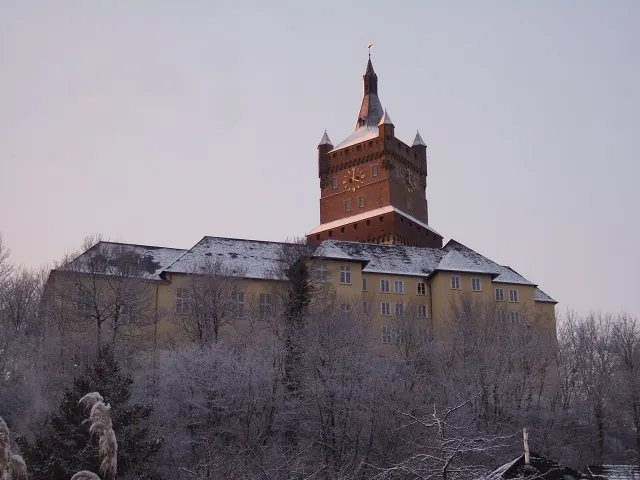
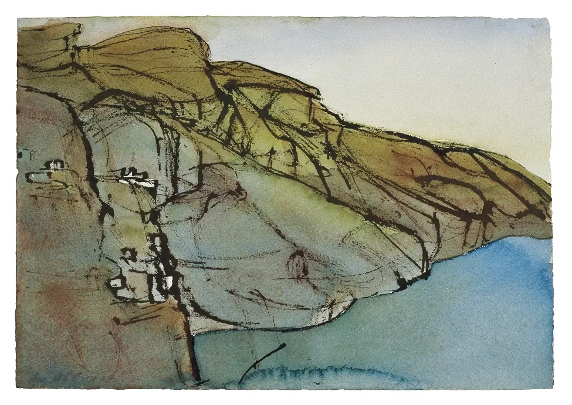
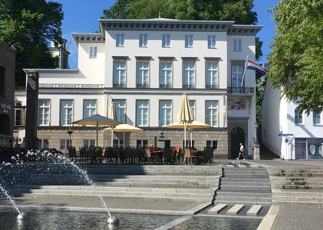
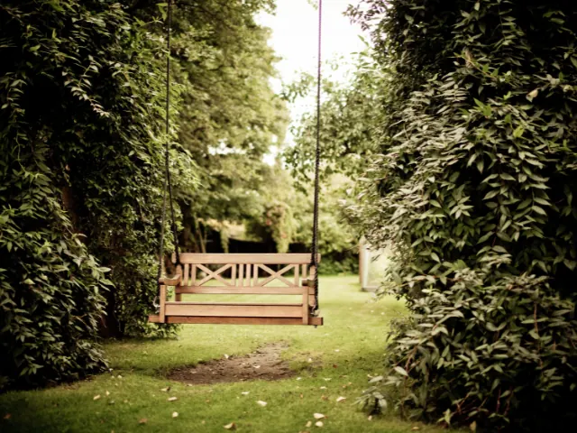

7x Kleef net over de grens bij Nijmegen
Gepubliceerd op 26 oktober 2022, bijgewerkt op 29 oktober 2024

Net over de grens, vlak bij Nijmegen ligt Kleef, of Kleve, zoals de Duitsers zeggen. Kleef is een leuk stadje om te bezoeken en een leuk uitje; het ligt op een heuvel en is van oorsprong een kuuroord – ‘Bad Kleve’. Van die weelderige historie ervaar je ook nu nog duidelijk de sporen en de mooie eigenschappen. Fraaie, historische gebouwen en locaties, een prachtig aangelegde parktuin en leuke winkelstraatjes. Het is echt de moeite waard om een dagje of langer de grens over te wippen. Natuurlijk wil je het graag met eigen ogen zien, maar we nemen je hier vast mee op een verkennende tour langs 7 bezienswaardigheden in het mooie Kleef.
1 – Kasteel de Zwanenburcht
Hier sta je aan de basis van Kleef. Kasteel Zwanenbrug, Schwanenburg in het Duits, stamt al uit de elfde eeuw. Vroeger werd het kasteel gewoon het slot van Kleef genoemd, de naam Zwanenburcht kreeg het pas in de negentiende eeuw. Door de eeuwen heen onderging het kasteel veel transformaties; niet alleen qua uiterlijk, maar ook het gebruiksdoel veranderde. Was het voorheen een klassiek kasteel, tegenwoordig is het meer een slot in barokstijl. Het kasteel is vandaag de dag in gebruik als rechtbank. Je kunt de Spiegeltoren van het slot bezoeken.


2 – Museum Kurhaus Kleef
Een prachtig monument om doorheen te dwalen. Zoals gezegd was Kleef voorheen een kuuroord en stond het bekend als Bad Kleve. Het was een van de belangrijkste Noord-Europese kuuroorden in de jaren 1700 en 1800, dankzij de bron die in 1741 in de Springenberg gevonden werd. Dit Kurhaus is een ontwerp van Anton Weinhagen uit 1845 en was lange tijd het grootste badgebouwencomplex van Kleef. Eind vorige eeuw heeft het de bestemming museum gekregen. Je ziet er moderne kunst en architectuur in een verder barok interieur.
Welke evenementen zijn er in KLeve?
bekijk ze hier3 – Haus Koekkoek
Het Barend Cornelis Koekkoek Haus is een populair kunstmuseum in Kleef. Het is het voormalige huis van de Nederlandse schilder B.C. Koekkoek, die vanuit Middelburg naar Kleef verhuisde. In de verzameling landschapsschilderijen van zijn hand is zijn Nederlandse geboortestad regelmatig terug te vinden. Zijn schilderijen ademen vooral de sfeer van de romantiek. Naast kunst van B.C. Koekkoek hangt er kunst van kunstenaars met vergelijkbaar werk. Ook de klassieke inrichting van het museumhuis is bezienswaardig.

4 – Kleefse tuinen
Houd je van tuinarchitectuur, dan zijn de Kleefse tuinen zeker een bezoekje waard! In het fraaie parklandschap met aantrekkelijke hoogteverschillen zie je prachtige perspectieven. Het park is halverwege 1600 in opdracht van de stadhouder aangelegd. In de tuinen valt vooral op dat er gelet is op hoe de lijnen zich met elkaar verhouden waardoor de tuin veel bijzondere doorkijkjes biedt. Vanaf het amfitheater heb je een fantastisch uitzicht over dit bijzondere en met oog voor detail aangelegde landschapspark.

5 – Lohengrinbrunnen en winkelen in Kleef
De Große Straße is de belangrijkste winkelstraat in het centrum van Kleef in Duitsland. Je kunt er dan ook naar hartenlust shoppen en op en top genieten van een drankje, een coupe ijs of een hapje. En … als je er dan toch bent, kun je ook even stilstaan bij de fontein die daar centraal staat: de Lohengrinbrunnen. Het beeld op de fontein vertelt het mythische verhaal over het ontstaan van Kleef. Een zwaan trekt de Zwanenridder weg; zijn twee zonen willen dit niet en zijn vrouwe, prinses Beatrix probeert haar man nog vast te pakken.
6 – Reichswald Forest War Cemetery
Een stuk geschiedenis om even stil van te worden. Deze indrukwekkende militaire begraafplaats ligt net buiten de stad Kleef, maar is wel een van de mooiere in zijn soort in Europa, gelet op de inrichting en de omgeving. Het Reichswald Forest War Cemetery telt 7654 graven en is hiermee de grootste begraafplaats van het Britse Gemenebest in Duitsland. Een gedenkwaardige plek, met een verdrietige geschiedenis die niet vergeten mag worden.
7 – De Stiftskerk
Ook weer een gebouw met een rijke historie. De belangrijkste katholieke kerk van Kleef is gebouwd in de veertiende eeuw, maar werd in WO II compleet verwoest door bombardementen. Rond 1950 is aan de hand van historische modellen begonnen met het opnieuw opbouwen van de Stiftskerk in Kleef, waarbij gotische elementen zoals waterspuwers zijn teruggeplaatst. In 1969 was de wederopbouw van de kerk voltooid.